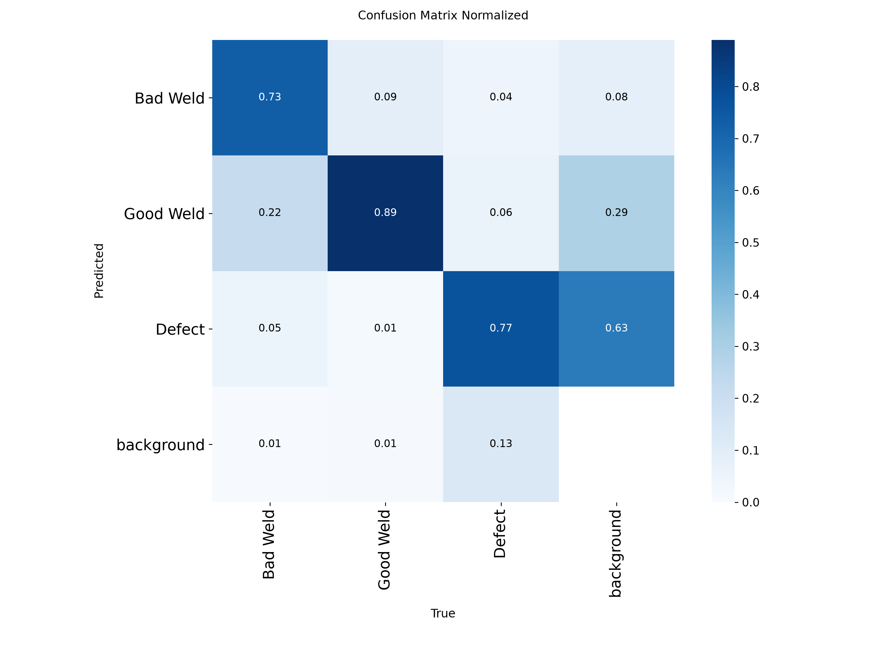

Inspeksi Cacat Las (Model Deep Learning v1)
Pilih foto uji nyata (belum pernah dilihat model saat latihan) atau unggah/jepret foto las Anda sendiri untuk menjalankan deteksi ONNX.
Foto Uji Nyata 1 · Fillet Weld Campuran (Good + Bad + Defect)
YOLO11n ONNX · Held-Out Test
Catatan Keselamatan QC: Deteksi di atas dihasilkan oleh model Deep Learning SnapQC Welding v1 yang benar-benar dilatih pada dataset publik CC0. Gunakan sebagai alat bantu skrining awal; pemeriksaan gauge, NDT, dan persetujuan class/flag tetap dilakukan oleh inspector berwenang.
Verifikasi Inspector (Human-in-the-Loop)
0 disetujuiTinjau hasil deteksi model. Klik Setujui untuk menyimpan label latih ulang (Active Learning) atau Tolak bila deteksi meleset.
Ekspor Label YOLO (Active Learning)
Label otomatis berformat YOLO (class_id cx cy w h) untuk memperkaya dataset versi berikutnya.
# Setujui minimal satu deteksi di atas untuk melihat format label YOLO
Evaluasi Nyata — SnapQC Welding v1 (YOLO11n)
Hasil terukur pada 126 foto uji terpisah (tidak pernah masuk data latih) setelah 40 epoch di NVIDIA RTX 5060.
80,2%AP@50 Bad WeldUji terpisah (126 foto)
71,5%AP@50 Good WeldUji terpisah (126 foto)
59,7%mAP@50 TotalVal: 64,8% · Test: 59,7%
10,13 MBUkuran ONNXJalan lokal tanpa API cloud
Rincian Evaluasi per Kelas (Validation vs Held-Out Test)
| Kelas | AP@50 Validasi (283 foto) | AP@50 Uji Terpisah (126 foto) | Analisis Rekayasa |
|---|---|---|---|
| Bad Weld | 74,6% | 80,2% | Kuat mengenali jalur las kasar/tidak rata secara keseluruhan. |
| Good Weld | 77,0% | 71,5% | Baik membedakan jalur las rapi dari area las bermasalah. |
| Defect (titik cacat kecil) | 42,8% | 27,4% | Cacat mikro (porositas/lubang kecil 20–40 px) lebih menantang pada input 640px; target peningkatan v2 lewat resolusi 1024px / tiling (SAHI) + Active Learning. |
Confusion Matrix (Ternormalisasi)

Kurva Pelatihan 40 Epoch

Riwayat Verifikasi Inspector
Keputusan validasi Anda pada sesi ini.
| Foto | Kelas Model | Skor AI | Keputusan Inspector |
|---|---|---|---|
| Belum ada verifikasi pada sesi ini. | |||
What's New
Riwayat pembaruan SnapQC, terbaru terlebih dahulu.